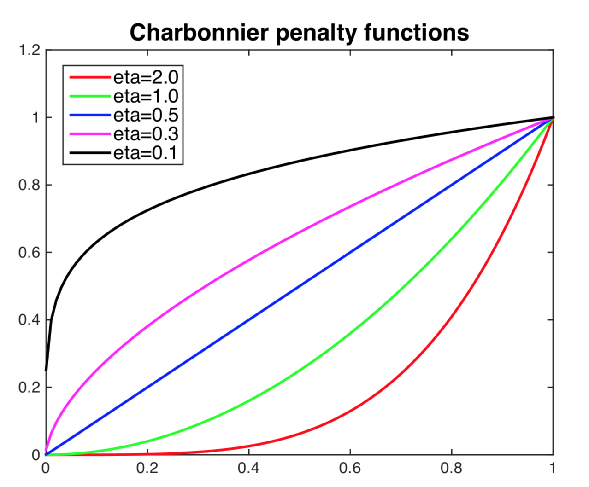

Information
- Title: FDA: Fourier Domain Adaptation for Semantic Segmentation
- Author: Yanchao Yang
- Institution: UCLA(加州大学洛杉矶分校)
- Year: 2020
- Journal:CVPR
- Source: IEEE, arxiv, Github, Open access
- Cite: Yanchao Yang, Stefano Soatto; Proceedings of the IEEE/CVF Conference on Computer Vision and Pattern Recognition (CVPR), 2020, pp. 4085-4095
- Idea: 用目标域的低频振幅替换源域做训练来近似域对齐
1 | @InProceedings{Yang_2020_CVPR, |
Abstract
提出了一种无监督域适应的方法，通过交换源域的低频成分来减少源域和目标域的分布差异。
Introduction
如图所示
作者对源域和目标域图像做 FFT 并用目标域的低频部分替换源域的低频部分再使用 iFFT 获得重构图像用于训练。
有一个需要选择的超参数，即交换频谱区域的大小（图中绿色框），作者测试了各种大小以及一种多尺度方法。
作者提出这种方法的动机在于可以观察到振幅谱的低频部分可以显著变化而不会影响高级的语义信息，通过学习这种变化可以使得模型更加泛化。
Method
首先进行傅里叶变换，用 ℱA, ℱP : ℝH × W × 3 → ℝH × W × 3 表示傅里叶变换 ℱ 得到的振幅和相位，对于单通道图像 x 有： $$ \mathcal{F}(x)(m, n) = \sum_{h,w} x(h,w) e^{-j2\pi\left(\dfrac{h}{H}m + \dfrac{w}{W}n\right)}, j^2=-1 $$ 用 ℱ−1 表示逆傅里叶变换用于将振幅和相位映射回空域，然后设置掩模矩阵 Mβ 其除了中心区域外的位置都是 0，其中β ∈ (0, 1)，假设图像的中心为 (0, 0)： Mβ(h, w) = 𝟙(h, w) ∈ [−βH : βH, −βW : βW] β 不是基于像素进行选择的，所以不取决于图像大小和分辨率。
给定两个随机从源域和目标域采样的图像 xs ∼ Ds, xt ∼ Dt，作者提出的 FDA 可以表示为： xs → t = ℱ−1([Mβ ∘ ℱA(xt) + (1 − Mβ) ∘ ℱA(xs), ℱP(xs)]) 其中将原图像低频部分的相位 ℱA(xs) 替换为了目标图像。
上图展示了 β 选择的不同带来的影响，作者设置 β ≤ 0.15.
应用到语义分割，目标损失函数为： ℒce(ϕw; Ds → t) = −∑i⟨yis, log (ϕw(xis → t))⟩. 添加了正则化使其更鲁棒（没看懂） ℒent(ϕw; Dt) = ∑iρ(−⟨ϕw(xit), log (ϕw(xit))⟩) 其中 ρ(x) = (x2 + 0.0012)η 是Charbonnier惩罚函数，如下图所示，其对于高熵预测的惩罚大于低熵预测的惩罚。

最后使用整体的损失训练语义分割网络 ϕw ： ℒ(ϕw; Ds → t, Dt) = ℒce(ϕw; Ds → t) + λentℒent(ϕw; Dt) 还有一些关于自监督训练的说明，但不是很懂，有兴趣的同学可以去看看原文。
Experiment
实验设置：
- 数据集：合成数据集GTA5 和 SYNTHIA，真实域数据集 CityScapes
- 分割网络：ResNet101 和 VGG16
- 训练设置：BatchSize 为 1，SGD优化器，学习率 2.5e-4，poly 学习率调整策略(0.9 比例)，0.0005 权重衰减
GTA5 → CityScapes 任务的消融实验：
GTA5 → CityScapes 任务的量化比较：

SYNTHIA → CityScapes 任务的量化比较：
如果从头开始训练，较大的 β 泛化效果更好，但与自监督训练相结合时会产生更多偏差
可视化实验
Conclusion
作者提出了一种不需要任何学习的简单域对齐方法，并且可以轻松集成到将无监督域适应转换为半监督学习的学习系统中。需要注意损失函数的适当正则化，为此作者提出了具有各向异性（Charbonnier）加权的熵正则化器。多频带传输方案解决了自我监督训练中的自我参照问题，该方案不需要对具有复杂模型选择的学生网络进行联合训练。
这表明，由于低级统计数据导致的一些分布失调（众所周知，这种失调会对跨不同领域的泛化造成严重破坏）可以通过快速傅里叶变换非常简单地捕捉到。此外，实数信号频谱的傅里叶逆变换保证是实数，因为可以很容易地证明虚部在给定被积函数的斜对称性的情况下被抵消了。
对影响图像域的有害可变性的鲁棒性仍然是机器学习中的一个难题，作者并不声称我们的方法是最终的解决方案。然而，在某些情况下，可能没有必要学习已经知道的东西，例如图像的低级统计数据可以有很大差异而不影响底层场景的语义。这种预处理可以替代复杂的架构或费力的数据扩充。
Others
这个想法在我的研究中也被想到了，但并没有很好的实验结果，这篇论文值得研究和学习为什么同样的 idea 我没有做出成果呢？
源码分析
PS：重要的实现在 __init__.py 文件中还挺隐蔽
作者写了 numpy 和 pytorch 的两种实现，实际上用 pytorch 的好一些，因为可以使用 GPU 加速计算。
最开始是提取相位和振幅的函数（有点奇怪）
1 | def extract_ampl_phase(fft_im): |
接下来是个四个角上替换的函数
1 | def low_freq_mutate( amp_src, amp_trg, L=0.1 ): |
接下来这个函数应该是等价的
1 | def low_freq_mutate_np( amp_src, amp_trg, L=0.1 ): |
然后是两种实现方法
1 | def FDA_source_to_target(src_img, trg_img, L=0.1): |
实际上上面的代码会报错，应该是作者使用的是旧版 pytorch
的缘故，新版本的 pytorch 将 fft 集成到一个包 torch.fft
里面了而且并不会输出虚数实数分离的情况，所以若要运行需要安装合适的版本或者稍微进行修改
如有错漏，欢迎指正！如果对你有帮助的话，请给我点个赞吧~
欢迎前往 我的博客 查看更多笔记